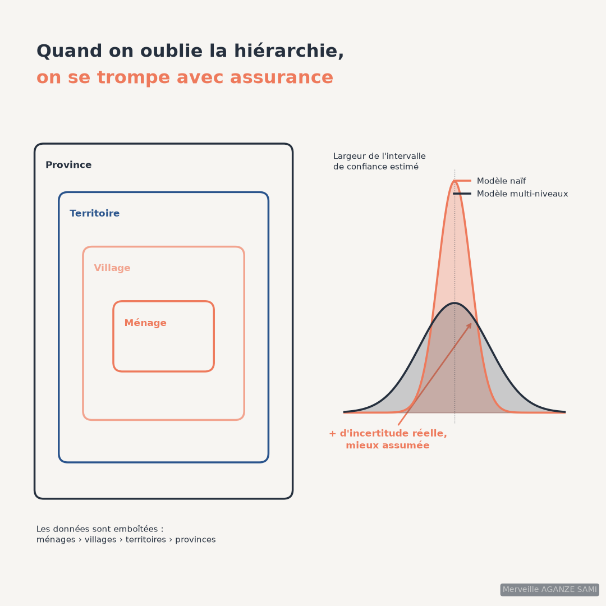

Data produced by a monitoring system almost always have a nested structure: households belong to villages, those villages to territories, those territories to provinces. This organisation is not a presentational convenience; it has a direct statistical consequence.
Two households in the same village share an environment, a market, access to services, often a common history. Their observations are therefore correlated. An analysis treating them as independent implicitly assumes each household contributes an equivalent amount of information, which is not the case: within a homogeneous cluster, each additional observation contributes less than the one before.
1. The consequence: intervals that are too narrow
The effect of this correlation is well documented. It translates into a multiplier applied to the variance of the estimator, often called the design effect. Depending on the strength of internal correlation and the number of units per cluster, this factor can reach several units, meaning the real confidence interval is appreciably wider than the one a standard computation produces.
The difficulty is not merely obtaining a wrong figure: it is obtaining a wrong figure accompanied by a stated precision that corresponds to nothing. A difference declared significant may cease to be so once the structure is accounted for.
Intraclass correlation. This quantity expresses the share of total variability lying between clusters rather than within them. A value near zero indicates that villages resemble one another and that structure matters little; a high value indicates instead that village membership largely determines the observed value. It is the first result to examine, before any interpretation of coefficients (Snijders & Bosker, 2012).
2. What a random effects model contributes
The model introduces, for each level of the hierarchy, a random term representing the departure specific to each unit at that level. It simultaneously estimates common effects — those holding across the population — and dispersion between clusters. Three contributions follow.
- Standard errors consistent with the structure. Reported uncertainty incorporates within-cluster correlation rather than ignoring it.
- A decomposition of variance. The model indicates what share of variation is explained by household characteristics and what share by local setting, information an ordinary regression does not provide.
- Stabilised cluster-level estimates. Village-specific estimates are drawn towards the overall mean the more strongly the fewer observations the cluster holds, limiting extreme values arising from small counts (Gelman & Hill, 2007).
3. Implementation conditions
- 1A sufficient number of clusters. This is the main constraint, and it concerns the number of villages, not the number of households. Below about fifty clusters, estimation of second-level variances and associated standard errors becomes biased (Maas & Hox, 2005). Corrections exist for cases where this threshold cannot be met (McNeish & Stapleton, 2016).
- 2An explicit choice of random effects. Allowing only the intercept to vary by village, or also the slope of a variable, corresponds to two distinct assumptions: an effect that is identical everywhere, or one whose strength depends on the setting.
- 3Considered handling of centering. A household-level variable may be centred on the overall mean or on its village mean. This choice changes the interpretation of the coefficient — departure from the population, or departure from neighbours — and is not neutral (Enders & Tofighi, 2007).
- 4A distinction between variables at different levels. Distance to market characterises the village, household size characterises the household. Entering them indiscriminately into one model leads to confused interpretations.
4. Articulation with the sampling design
The model's structure should mirror that of the sampling design. Where the survey was built by clusters — as most field surveys are — the primary sampling units are the natural level for random effects. This consistency between design and analysis is a useful checkpoint, developed in the article on spatially stratified sampling.
A lighter alternative keeps an ordinary regression while clustering the standard errors. This settles the inference question but provides neither the variance decomposition nor cluster-level estimates. It suits situations where the structure is a nuisance to correct; the full model suits situations where the structure is itself an object of analysis.
- Confusing level of analysis with level of conclusion. An effect estimated at village level does not mechanically apply to a particular household. Transposing one to the other is a classic inferential error.
- Clusters of very unequal size. A village of three households and one of eighty do not contribute in the same way. Counts per cluster must be reported.
- Convergence of estimates. Complex models applied to sparse data frequently fail to converge. Simplifying the random structure is preferable to forcing estimation.
- Three levels or more. Each additional level requires a sufficient number of units at that level. Adding a provincial level with four provinces yields no usable information.
Key points
- Field data are almost always nested, which correlates observations within a cluster
- Ignoring this structure produces intervals that are too narrow and overstated significance
- Intraclass correlation is the first result to examine
- The constraint concerns the number of clusters, not the number of observations
- The model's structure should mirror that of the sampling design
The geographic dimension of a monitoring system is not only an object for mapping: it is a statistical assumption. When it is neglected, the error concerns not just the estimate but the confidence placed in it.
References
- Enders, C. K., & Tofighi, D. (2007). Centering predictor variables in cross-sectional multilevel models: A new look at an old issue. Psychological Methods, 12(2), 121–138. doi.org/10.1037/1082-989X.12.2.121
- Gelman, A., & Hill, J. (2007). Data Analysis Using Regression and Multilevel/Hierarchical Models. New York: Cambridge University Press.
- Maas, C. J. M., & Hox, J. J. (2005). Sufficient Sample Sizes for Multilevel Modeling. Methodology, 1(3), 86–92. doi.org/10.1027/1614-2241.1.3.86
- McNeish, D. M., & Stapleton, L. M. (2016). The Effect of Small Sample Size on Two-Level Model Estimates: A Review and Illustration. Educational Psychology Review, 28(2), 295–314. doi.org/10.1007/s10648-014-9287-x
- Snijders, T. A. B., & Bosker, R. J. (2012). Multilevel Analysis: An Introduction to Basic and Advanced Multilevel Modeling (2nd ed.). London: Sage.

Merveille Aganze Sami
MEL & Database Management Advisor. 9+ years of experience in monitoring & evaluation, GIS and digitalization with international organizations (GIZ, Enabel) in DR Congo.
Survey data analysis to make reliable?
Get in touch